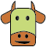

WAAROM VEGAN?
WAT IS VEGAN?
Veganisme is een levensstijl een dieet waarbij mensen ervoor kiezen geen producten van dierlijke oorsprong te gebruiken. Dit betekent geen vlees, vis, zuivel, eieren of honing, en ook geen andere dierlijke producten zoals leer of wol.

VOORDELEN EN WEETJES OVER VEGAN

VOORDEEL
Milieu: Veganisme vermindert de CO₂-uitstoot, ontbossing en waterverbruik.

VOORDEEL
Dieren: De dieren worden niet geslacht voor voeding of andere producten. Zo leven ze langer.
WEETJE
Eten: Vegan gerechten kunnen net zo smaakvol zijn door kruiden, peulvruchten en vleesvervangers.
WEETJE
Eiwitrijk: Bonen, linzen, tofu en avocado zijn uitstekende plantaardige eiwitbronnen.